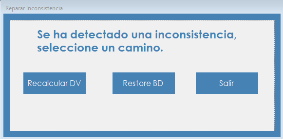

Aparece cuando el sistema detecta datos alterados por fuera de AeroManager, y permite al administrador decidir cómo resolverlo.
AeroManager protege sus datos con dígitos verificadores. Si alguien modifica, agrega o elimina información directamente en la base de datos, sin pasar por el sistema, esos dígitos dejan de coincidir y la inconsistencia se detecta al iniciar sesión.
Mientras el problema no se resuelva, nadie puede usar el sistema. Esta pantalla ofrece dos caminos: aceptar los datos actuales recalculando los dígitos, o volver a un estado anterior restaurando un respaldo. La decisión depende de si la diferencia detectada es legítima.
No figura en el menú. Se abre sola al presionar Login en la pantalla de Inicio de sesión, cuando hay inconsistencias y las credenciales corresponden a un usuario con el rol Administrador. Antes se muestra un aviso con el detalle de los datos afectados.

| Control | Para qué se usa |
|---|---|
| Recalcular DV | Vuelve a calcular los dígitos verificadores a partir de los datos actuales. |
| Restore BD | Abre Gestión de respaldos para restaurar una copia. |
| Salir | Cierra AeroManager sin resolver la inconsistencia. |
Atención. Recalcular da por válidos los datos tal como están. Si hubo una alteración indebida, deja de ser detectada. Conviene usar esta opción solo después de confirmar que los datos son correctos.
Si en Gestión de Respaldos se presiona Cancelar, se vuelve a esta pantalla sin haber restaurado nada.
| Situación | Qué significa y qué hacer |
|---|---|
| "Se detectaron inconsistencias en los siguientes datos:" seguido de la lista de tablas afectadas y de "Seleccione un camino." | Es el aviso inicial. Por cada grupo de datos afectado se indican los registros adulterados. Al aceptarlo se muestra la pantalla de reparación. |
| "se agregaron o eliminaron registros por fuera del sistema" | Aparece dentro del aviso cuando cambió la cantidad de registros de ese grupo de datos, sin que se pueda señalar uno en particular. |
| "... y" seguido de una cantidad, "registro(s) más sin mostrar." | Aparece dentro del aviso cuando hay más registros afectados que los que se listan. |
| "DV recalculado correctamente. Inicie sesión nuevamente." | La inconsistencia quedó resuelta. Hay que volver a ingresar. |
| "El sistema no está disponible en este momento. Contacte al administrador." | Aparece en el inicio de sesión a los usuarios que no tienen el rol Administrador mientras haya inconsistencias. Un administrador tiene que resolverlas. |